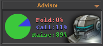

Advice is intended for use by novice players. Advice can be left permanently visible, or it can be hidden so that it only appears when you move your mouse cursor over the shield graphic hiding it. Clicking in the advisor pane will toggle showing or hiding the current advice.
The advisor acts like another computer player that sits behind you and lets you know what it would do if it were in your shoes. Don't assume that the advice is always correct, or that it is the only way to play. It is simply an example of how one of the computer opponents would play the hand.
The advisor will help novice players recognize when it is appropriate to raise a strong hand, call with draw odds, or learn which starting hands should be played and which should be avoided. Advanced players will not find the advice feature to be of much use.
Suggestions of actions to make are shown as both a pie-chart, and as percentages for folding, calling, and raising. The percentages reveal how often the advisor thinks the action should be taken. For instance, if the advisor says fold 80% and raise 20%, it is probably suggesting that it would normally fold this hand, but that 20% of the time it would raise as a bluff.
If you were to always choose the maximum percentage displayed as your action, your play would be quite straightforward and transparent. This style of play would be easily exploitable.
You can choose which bot profile you want for your advisor on the second page of the advisor panel. This page can be accessed by clicking the little arrow in the title bar of the panel. A different advisor can be chosen for both limit and no-limit games.
The third page (which again can be accessed through the arrow in the title bar of the panel) lets you enable or disable all of the pop-up advice warnings. The pop-up advice warnings are rule-based triggers that will pop-up when we feel you may be about to make a big mistake such as folding a very strong draw or failing to bet the nuts on the river. Each different warning can be disabled individually when they are triggered. This lets you re-enable all warnings or turn them all off completely.